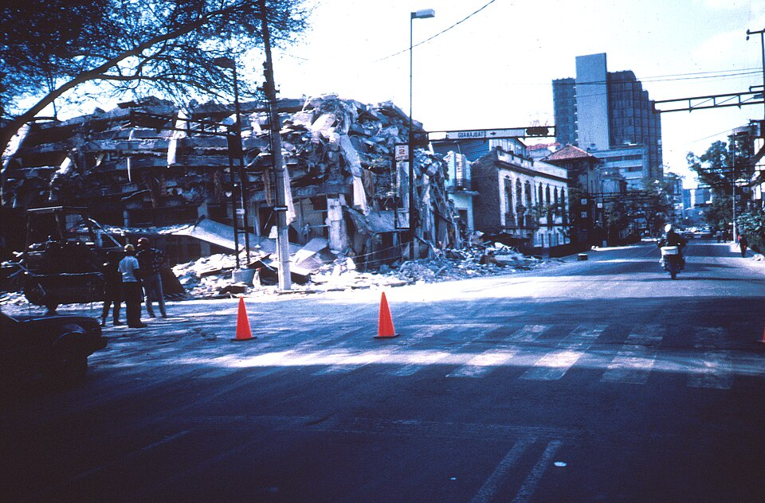

Un terremoto de dos minutos deja a la Ciudad de México entre escombros
El sismo, de magnitud 8.1 y con epicentro frente a las costas de Michoacán, sacudió la capital a las 7.19 de la mañana y derribó hospitales, hoteles y edificios de vivienda. El número de muertos no puede precisarse esta noche. Miles de voluntarios excavan con sus manos entre los escombros.

A las siete y diecinueve de la mañana, cuando la ciudad se encaminaba al trabajo y a la escuela, la tierra comenzó a moverse y no paró durante casi dos minutos. Los que estaban en la calle vieron ondular el pavimento y mecerse los edificios como árboles; los que estaban adentro bajaron las escaleras entre el polvo o no alcanzaron a bajar. Cuando el movimiento cesó, sobre el centro de la capital se levantaba una sola nube parda. Edificios enteros habían dejado de existir: en su lugar quedaban montañas de losas encimadas, varillas retorcidas y un rumor de voces que pedían auxilio desde abajo.
El sismo, de magnitud 8.1 según los sismólogos, tuvo su epicentro frente a la costa de Michoacán y castigó con especial saña los suelos blandos del antiguo lago sobre el que está construida la capital. La lista de derrumbes es larga y esta noche sigue creciendo: el Hospital Juárez, donde quedaron atrapados médicos, enfermeras y recién nacidos; la torre de ginecobstetricia del Hospital General; el Hotel Regis, en la Alameda; el edificio Nuevo León, en Tlatelolco; talleres de costura por el rumbo de San Antonio Abad; los estudios de televisión de la avenida Chapultepec. Se habla de cientos de construcciones caídas o a punto de caer.
Cuántos muertos hay, nadie puede decirlo hoy con honradez. Las cifras cambian de hora en hora: los cuerpos rescatados se cuentan ya por centenares y los socorristas temen que el total se cuente por miles, porque bajo los escombros quedan muchos, vivos y muertos. Amplias zonas del Distrito Federal están sin luz, sin agua y sin teléfono; el país pasó horas sin noticias de su capital, con las señales de televisión caídas junto con sus antenas. Los hospitales que siguen en pie atienden en los patios, a cielo abierto, y en las banquetas se improvisan puestos de socorro y listas de nombres escritas a mano.
Y sin embargo, la noticia de este día no son solo las ruinas. Antes de que llegara ninguna autoridad, la gente ya estaba arriba de los escombros: muchachos que forman cadenas humanas para pasar cascajo de mano en mano, vecinos que se meten a rastras por los huecos, como topos, para alcanzar a los enterrados, señoras que reparten tortas y agua, taxistas que llevan heridos sin cobrar, estudiantes que dirigen el tránsito en los cruceros sin semáforo. Piden silencio con el puño en alto para escuchar a los sepultados, y la multitud entera calla. Nadie los organizó. La ciudad se está rescatando a sí misma con las manos.
El gobierno, rebasado en las primeras horas, apenas comienza a coordinar el auxilio, y ya se discute si aceptará la ayuda que ofrecen otros países. Vendrán los peritajes, las preguntas sobre tantos edificios públicos caídos, la cuenta verdadera de los muertos, que hoy nadie conoce. Este diario deja registro de lo que vio: una capital herida como no lo estaba desde tiempos de guerra, y un pueblo que no esperó órdenes para salvar a sus hermanos. Si algo quedó en pie esta mañana, más firme que el concreto, fue eso. Los días que vienen dirán cuánto costó; hoy solo puede decirse cuánto duele.